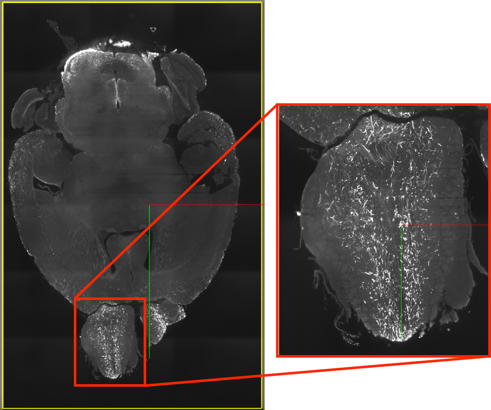
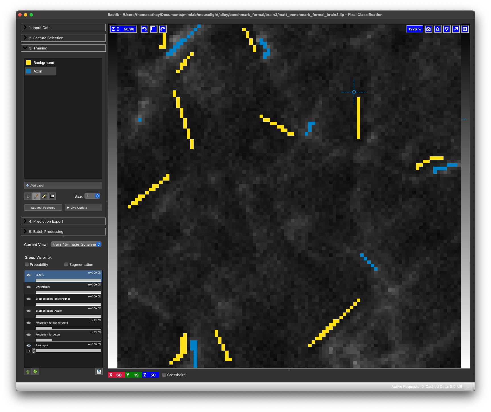
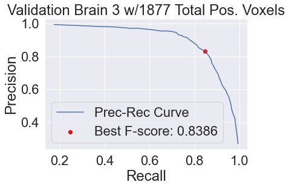
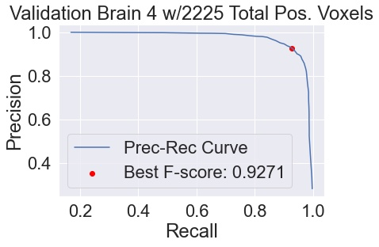
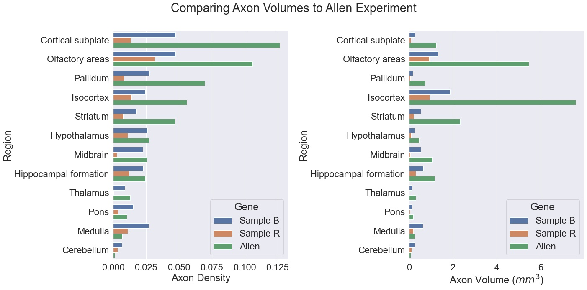
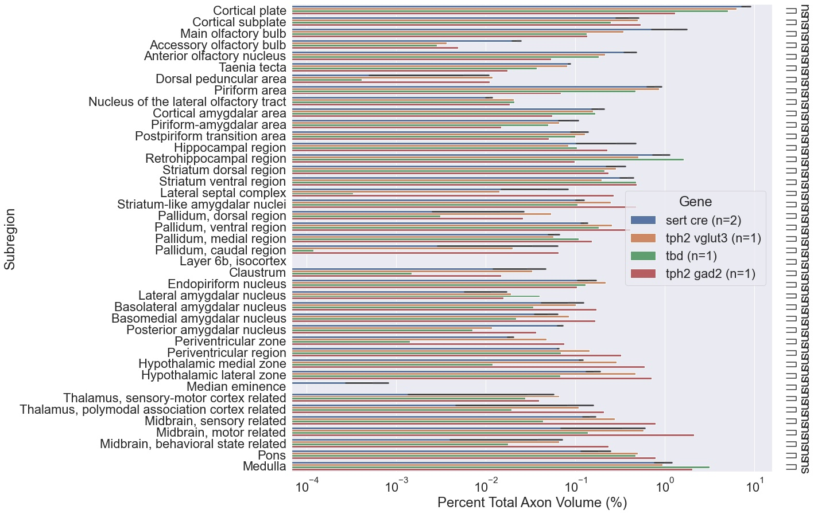

class:inverse ### Connectivity Subtypes of Serotonergic Neurons in Dorsal Raphe Nucleus Thomas L. Athey <br><br> <img src="../../images/funding/jhu_bme_blue.jpg" STYLE="width:100%;"/> <!-- <img src="../images/funding/KNDI.png" STYLE="HEIGHT:95px;"/> --> <br> .foot[w: <http://neurodata.io/talks/??.html>] --- class:inverse ### Wright Lab @ Weil Cornell <div class="small-container"> <img src="../../faces/matt_wright.jpeg"/> <div class="centered">Matt Wright</div> </div> <div class="small-container"> <img src="../../faces/marija_pavlovic.jpeg"/> <div class="centered">Marija Pavlovic</div> </div> <div class="small-container"> <div class="centered">Therese Larson</div> </div> <br> <br> ### Neurodata @ JHU <div class="small-container"> <img src="../../faces/vikram.jpg"/> <div class="centered">Vikram Chandrashekhar</div> </div> --- class:inverse ### Outputs (Axon Projections) - Resolution: $1.83 \mu m \times 1.83 \mu m \times 2 \mu m$  --- class:inverse ### Image Segmentaton <b>Image Domain</b> $$Y=\lbrace y_i \rbrace, Y \subset \mathbb{Z}^3$$ <b>Image</b>: antibody fluorescence, endogeneous fluorescence, background $$I = \lbrace I_{y_i}, y_i \in Y \rbrace$$ <b>Local Image Features</b>: intensity, difference of Gaussian, eigenvalues of Hessian $$\phi_I : Y \rightarrow \Phi \subset \mathbb{R}^d$$ <b>Posterior Estimate</b>: random forest $$\hat{p}: \Phi \rightarrow [0,1]$$ --- class:inverse ### Training and Validation Datasets Sparse annotations of subvolumes (Friedmann et. al., 2020).  - 100x100x100 voxels per subvolume - Partial annotations on 3 slices | Sample | # Training Subvolumes | # Validation Subvolumes |:--- |:--- |:--- | | 3 | 32 | 21 | 4 | 5 | 10 --- class:inverse ### Validation Performance <div class="row"> <div class="column">  </div> <div class="column">  </div> </div> <a href="https://viz.neurodata.io/?json_url=https://json.neurodata.io/v1?NGStateID=c2BcwGAmR-KuAg">Full Results Example</a> --- class:inverse ### Comparison to <a href="https://connectivity.brain-map.org/projection/experiment/480074702?imageId=480075280&initImage=TWO_PHOTON&x=17028&y=11704&z=3">Allen Experiment</a>  --- class:inverse ### Analysis 